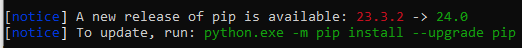

Content development environment#
Before you can contribute to PyAnsys documentation, you must set up your content development environment. Setup consists of creating a few accounts and installing some apps and tools.
If you intend only to review PRs created by others, you do not have to set up a full content development environment. Instead, you need only perform the steps in these topics:
If you intend to create your own PRs, perform the steps in all topics to set up a full content development environment.
Create a GitHub account#
GitHub is a web-based platform with more than 100 million users and 330 million repositories. A repository contains everything about a project and is the root of the project.
While GitHub uses the Git version control system for tracking changes in source code, it goes way beyond version control, offering a collaborative environment for hosting, managing, and sharing Git repositories.
To view or contribute to a GitHub project, you must have a GitHub user account.
Go to the Join GitHub page and complete the user account form.
Once your account is created, set it up to require two-factor authentication. For more information, see Configuring two-factor authentication in the GitHub documentation.
In a GitHub project, you can perform many tasks, including these:
Browse the codebase to explore the project’s structure and architecture.
Read the project-hosted documentation to understand how the project works, how to use it effectively, and how to contribute.
Review a PR created by a fellow contributor to ensure that the code being added or changed meets established coding standards, follows best practices, and is of high quality before the PR can be approved for merging into the codebase.
Create a local branch, make commits with suggested additions or changes, and then create your own PR for project maintainers to review, approve, and merge.
Integrate GitHub CI/CD.
Automate testing and deployment processes.
Manage discussions and build a community around your project.
While some of the preceding GitHub tasks are usually performed only by project maintainers, many of them are regularly performed by all team members, including content contributors.
For more information on GitHub, see Contributing and the GitHub documentation.
Install Git#
You must have Git or a graphical user interface (GUI) client for Git installed.
Because developers are accustomed to working in terminal environments, they tend to prefer using the Git command line, especially because it provides for greater control, customization, and automation. However, non-developer team members, such as project managers, designers, and writers, tend to prefer using a GUI client for Git.
With a GUI client like GitHub Desktop or Git Extensions, rather than having to remember complex command sequences, non-developer team members can use the visual clues that the GUI provides to better understand branching, PRs, merging, and history visualization.
If you do not yet have Git or a GUI client for Git installed, install your preferred tool from an official channel.
Join Ansys GitHub organizations#
Ansys has two GitHub organizations:
ansys: Contains Ansys public repositoriesansys-internal: Contains Ansys internal repositories
Ansys employees can join these Ansys organizations by clicking the following links to sign in first with their Ansys credentials and then with their GitHub credentials.
Join the Ansys GitHub organization.
Join the Ansys Internal GitHub organization.
Writers outside of Ansys who want to contribute to the documentation for a PyAnsys library can contact the PyAnsy core team for permission to access this project’s repository.
Install and use the Ansys Python Manager#
Because installing Python on Windows is a complex process for people new to the Python ecosystem, various groups within Ansys have worked together to create the Ansys Python Manager, an open source Python QT app. This app streamlines installing Python on Windows, simplifies creating and managing virtual environments, centralizes installing and using other development tools, and facilitates both installing PyAnsys packages and viewing PyAnsys documentation.
While Ansys Python Manager documentation is available, you can perform these steps to install and immediately begin using this app:
Go to the Releases page in the
python-installer-qt-guirepository.To download the executable (EXE) file for the latest release, under Assets, click Ansys-Python-Manager-Setup-v[latest version].exe.
In your Downloads directory, double-click this EXE file to open the Ansys Python Manager Setup window, where you can accept the defaults on each page.
When the installation completes, the Ansys Python Manager opens. If you close this app, you can open it again at any time from the Windows Start menu by selecting Ansys Python Manager.
On the Install Python tab, install a selected Python version:
For Installation type, choose Standard to install the standard installation from the Python organization.
For Python version, choose Python 3.11 to install the latest available version.
At the bottom of the page, click Install.
A Setup Progress window opens while Python is being installed and then closes when the installation finishes.
On the Create virtual environments tab, create and activate a virtual environment:
For Select Python version, choose the Python version that you want to create a virtual environment for.
You likely have only the one Python version that you just installed. However, developers might have several Python versions installed.
A virtual environment makes your life easier because you do not have to worry about dependency conflicts in the same environment. For more information, see Creation of virtual environments in the Python documentation.
For Virtual environment name, type the name to give your virtual environment.
For example, type
my_venv.At the bottom of the page, click Create.
After a few seconds, an Information window opens, indicating that your virtual environment has been successfully created. As indicated on the tab, virtual environments are created in an
.ansys_python_venvsfolder in your user directory.Click OK to close the Information window.
On the Manage Python Environments tab, use some of its many features to set up and explore your development environment:
For Available virtual environments, choose the virtual environment that you have just created.
Writers generally find having one virtual environment sufficient. However, developers might have several virtual environments for managing different packages and launching options.
Under General package management, click Install Python default packages to install all the open source packages that are commonly used by PyAnsys libraries in your virtual environment.
The Administrator window opens, showing the installation of the default packages. Once these packages are installed, this window closes.
To see a list of all packages installed in your virtual environment, under General package management in the app, click List installed packages.
The Administrator window opens, showing the names and versions of all installed packages.
If you create an issue on the Issues page for a project’s GitHub repository, you are asked for your Python version, which you selected on the Install Python tab, and your installed packages. You can copy the package information from here in the Administrator window and paste it into the issue template.
If a new release of an installed package is available, in addition to listing the installed packages, the Administrator window displays notices, which include the command for updating to the new release. Thus, you should periodically click List installed packages to see if you need to update an installed package.
After copying the update command for a package, you can paste it in the command prompt, which is the final line in the window that shows the name of your virtual environment in parentheses. You then press the enter key to run the command. The window displays information about uninstalling the current package and installing the updated package.
When finished, close the Administrator window.
Under PyAnsys package management, choose the PyAnsys package to install, the desired version, and click Install.
Choosing PyAnsys-Metapackge and an Ansys version installs all PyAnsys packages that are compatible for use with this Ansys version. While you can choose to install a metapackage for a particular Ansys version, if you are contributing to PyAnsys documentation for only one package, or only for a few packages, choosing to install only these individual packages saves disk space.
Once the package is installed, this window closes.
From the app’s File menu, periodically select Check for Updates to check for and install any updates available for the Ansys Python Manager.
From the app’s Help menu, select Online Documentation to see this app’s documentation. If this app is not open, you can go directly to the latest stable version of the Ansys Python Manager documentation on GitHub.
From the app’s Help menu, select PyAnsys Documentation to open the PyAnsys Documentation window, where you can choose the documentation that you want to view. Then, click Open Website to go directly to this documentation. When finished, you can close this window.
While you can close and reopen the Ansys Python Manager as needed, leaving this app open while you work is helpful because you can click Launch console under Launch options to open a console to run commands in your virtual environment.
If you click any other button under Launch options, the Ansys Python Manager installs this tool if it is not yet installed and then opens it. However, most of these tools are for developers and project maintainers who use them to write and test Python scripts. Because editing the reStructuredText (RST) and Python (PY) files for PyAnsys documentation is more easily accomplished using Visual Studio Code and the Python in Visual Studio Code extension, you likely do not need to use these other tools.
Install Visual Studio Code#
Visual Studio Code is a lightweight but powerful source code editor that runs on your desktop. As indicated in the Visual Studio Code documentation, it is available for Windows, macOS, and Linux. For information on installing and running Visual Studio Code on your operating system, see SETUP in the Visual Studio Code documentation.
While you can use another source code editor to modify RST and PY files, Visual Studio Code is one of the most commonly used source code editors worldwide. This guide assumes that you are using Visual Studio Code with the Python in Visual Studio Code extension.
Install the Python in Visual Studio Code extension#
The Python in Visual Studio Code extension makes Visual Studio Code an excellent Python editor. This extension, which works on any operating system with a variety of Python interpreters, leverages Visual Studio Code’s power to provide autocompletion and IntelliSense, linting, debugging, and unit testing.
Install the Python in Visual Studio Code extension:
From the View menu in Visual Studio Code, select Extensions.
At the top of the EXTENSIONS pane, type
pythonin the search box to filter the list of available extensions.Select the Python extension published by Microsoft, which is described as IntelliSense (Pylance) and is usually the first one in the list.
You can view information about this extension in the main pane on the right.
In either the EXTENSIONS pane or the main pane, click Install.
The Install button changes to a settings (gear) icon in the EXTENSIONS pane or to two buttons, Disable and Uninstall, in the main pane. This lets you know that the Python extension for Windows has been installed successfully.
Install pre-commit#
pre-commit is a tool for ensuring that all the changes that you make to files in a project successfully pass all checks run by the code style tools that are configured as part of the CI/CD process. For more information on the code style tools most commonly used in PyAnsys projects, see Code style tools.
To run pre-commit locally, you must install it in your development environment:
If the Ansys Python Manager and Administrator window are not still open, open them.
From the Administrator window’s command prompt, run this command:
python -m pip install pre-commit
The window displays installation information.
Install Vale#
Vale is a tool for maintaining a consistent style and voice in your
documentation based on a given style guide. When the Ansys templates
tool is used to create a PyAnsys project from the pyansys or pyansys-advanced template,
Vale is one of the many documentation style tools that is configured to run as part of the
CI/CD process. For more information, see Documentation style tools.
To run Vale locally, you must install it in your development environment:
If the Ansys Python Manager and Administrator window are not still open, open them.
From the Administrator window’s command prompt, run this command to install Vale:
python -m pip install vale
The window displays installation information.
Install Notepad++#
Links for using various GitHub search functions are available in Search on GitHub documentation in the GitHub documentation. However, to find occurrences of a particular word or phrase in a project, using Notepad++ is often easier. This app’s Find in Files option provides for quickly searching any given directory for a search string. For installation and search information, see Downloads on the Notepad++ website and Searching in the Notepad++ User Manual.
Tip
Notepad++ is also handy if you want to open one file in it to visually compare it to another file that you have open in Visual Studio Code.
Install Sphinx and the Ansys Sphinx Theme#
Sphinx, which uses reStructuredText as its default plaintext markup language, is a tool for generating documentation. While designed primarily for generating documentation for Python projects, it can be used for generating documentation for other programming languages and projects.
The Ansys Sphinx Theme is an Ansys-branded extension of the popular PyData Sphinx Theme. It is used along with Sphinx to assemble PyAnsys documentation from a project’s RST files and the docstrings in its PY files.
Install both Sphinx and the Ansys Sphinx Theme so that you can build PyAnsys documentation locally:
If the Ansys Python Manager and Administrator window are not still open, open them.
To install Sphinx in your virtual environment from PyPI (Python Package Index), from the Administrator window’s command prompt, run this command:
pip install -U sphinx
The window displays installation information.
To see the version of the installed Sphinx package, run this command:
sphinx-build --version
To install the Ansys-branded theme, run this command:
python -m pip install ansys-sphinx-theme
The window displays installation information. The Sphinx
conf.pyfile in thedocdirectory of a PyAnsys repository is already configured to use the Ansys Sphinx Theme.
Your development environment is now set up. If you are new to contributing to PyAnsys documentation, see Essentials for content writing. For lists of resources related to contributing to PyAnsys documentation, see PyAnsys documentation resources.
Note
You can customize the Ansys Sphinx Theme by making changes to the
html_theme_options dictionary in the Sphinx configuration (conf.py)
file in the doc directory. For additional information, see
HTML theme options
in the Ansys Sphinx Theme documentation.